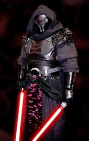

Les Sith sont les principaux antagonistes de l'ordre Jedi dans l'univers de Star Wars :
ils sont en effet les ennemis jurés des Jedi dont ils constituent une branche schismatique, et une menace pour la République galactique.
Ils revendiquent leur maîtrise du « côté obscur de la Force », ce à quoi le protagoniste jedi répond qu'ils en sont seulement les esclaves.
Le terme Sith est d'ailleurs ambigu puisqu'il peut à la fois désigner la race native de Korriban, l'organisation politico-religieuse (souvent sous la forme d'un Empire) ou la pensée philosophique.
On englobe alors toutes ces catégories sous le nom de Sith. Malgré tout, sa « facette » la plus connue est celle visitée dans les films : la conspiration puis le règne de Palpatine alias Dark Sidious, dernier Seigneur noir des Siths de Korriban.
Les chevaliers Jedi forment un ordre d'individus qui sont aptes à maîtriser la Force, et qui l'utilisent uniquement pour faire le bien.
L'Ordre commença des dizaines de milliers d'années avant la création de l'Empire galactique.
De nombreuses organisations anciennes et semi-légendaires ont été citées comme précurseurs de l'Ordre Jedi, tels que l'Ordre de Dai Bendu ou l'académie Chatos, mais aucune preuve décisive n'a jamais été apportée.
La planète de naissance de l'Ordre est Tython. Ce que l'on sait, également, c'est que les plus brillants philosophes, prêtres et guerriers se rassemblèrent il y a longtemps pour discuter de leurs découvertes à propos d'une Force mystique et énigmatique, et leurs efforts conduisirent au développement de l'Ordre Jedi.
Au départ, le Jedi était un ordre contemplatif. Au cours du temps, cependant, l'ordre prit une part de plus en plus active dans les affaires galactiques, et se centralisa finalement sur Coruscant, à la suite de la bataille catastrophique de Ruusan.